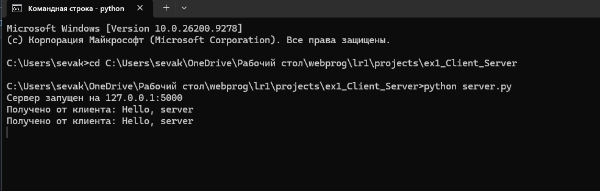
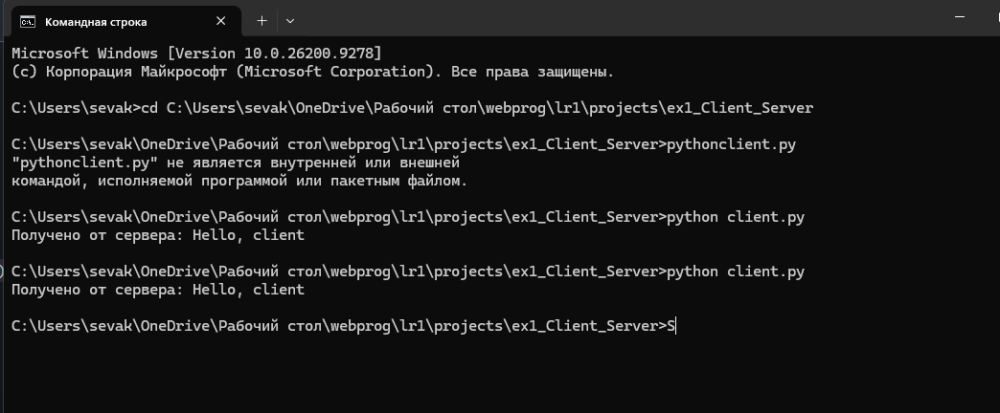
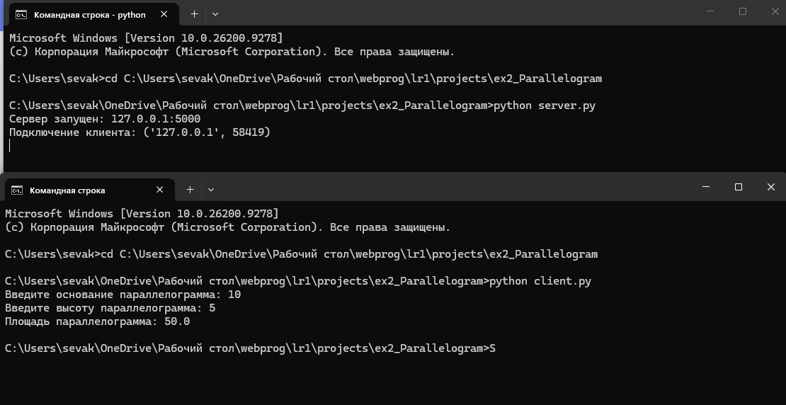
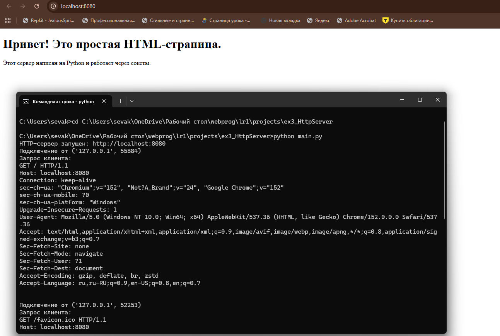
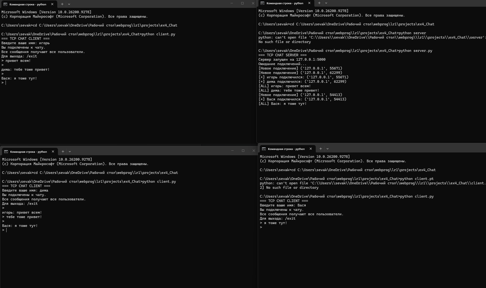
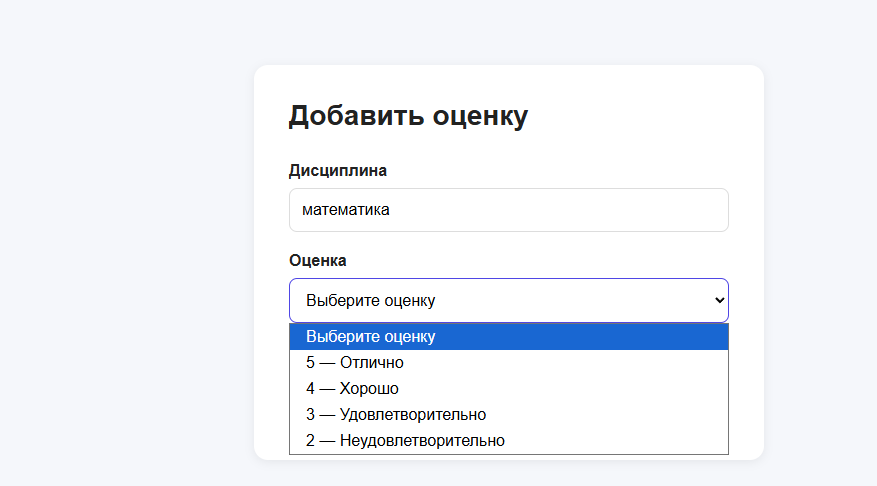
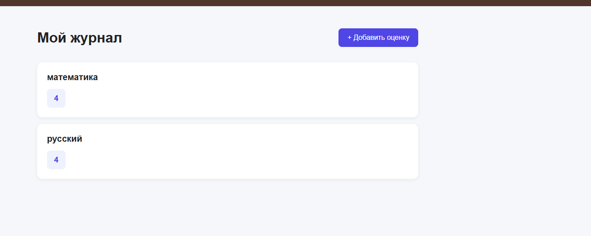

Лабораторная работа 1. Работа с сокетами
Задание 1
Дано: Реализовать клиентскую и серверную часть приложения. Клиент отправляет серверу сообщение «Hello, server», и оно должно отобразиться на стороне сервера. В ответ сервер отправляет клиенту сообщение «Hello, client», которое должно отобразиться у клиента. Обязательно использовать библиотеку socket + UDP.
Описание решения
Что нужно знать про udp протокол: UDP протокол - протокол без соединения. Отправитель посылает датаграмму, не дожидаясь подтверждения от получателя. Минусы этого подхода: UDP не гарантирует ни доставку, ни порядок пакетов, зато такой подход быстрее чем TCP.
Для выполнения задания были созданы два файла:
- server.py — серверная часть приложения
- client.py — клиентская часть приложения
Серверная часть
Серверная часть выполняет следующие функции:
- Создает UDP сокет с использованием
socket.SOCK_DGRAM - Привязывается к адресу
localhostи порту5000 - Ожидает входящее сообщение от клиента методом
recvfrom() - Выводит полученное сообщение в консоль
- Отправляет ответное сообщение "Hello, client" клиенту
- Закрывает соединение
Клиентская часть
Клиентская часть выполняет следующие функции:
- Создает UDP сокет
- Отправляет сообщение "Hello, server" на адрес сервера методом
sendto() - Ожидает ответ от сервера методом
recvfrom() - Выводит полученное сообщение в консоль
- Закрывает соединение
Запуск приложения
Для проверки работы приложения необходимо:
- Запустить сервер:
python3 server.py
- В отдельном терминале запустить клиент:
python3 client.py
Результаты выполнения
Вывод сервера:

Вывод клиента:

Выводы
В ходе выполнения задания была реализована базовая модель клиент-серверного взаимодействия с использованием протокола UDP. Основные отличия UDP от TCP:
- UDP не требует установки соединения
- Отсутствует гарантия доставки пакетов
- Меньшие накладные расходы по сравнению с TCP
- Подходит для приложений, где скорость важнее надежности
Задание 2
Цель: Реализовать клиентскую и серверную часть приложения. Клиент запрашивает выполнение математической операции, параметры которой вводятся с клавиатуры. Сервер обрабатывает данные и возвращает результат клиенту. Вариант 4 - Поиск площади параллелограмма
Описание решения
Для выполнения задания были созданы два файла:
- server.py — серверная часть приложения
- client.py — клиентская часть приложения
Серверная часть
- Создает TCP-сокет с использованием socket.SOCK_STREAM.
- Привязывается к адресу localhost и порту 5000.
- Переходит в режим ожидания входящих подключений с помощью метода listen(5).
- Принимает входящее TCP-соединение от клиента методом accept().
- Получает от клиента данные, содержащие параметры параллелограмма: основание a и высоту h.
- Преобразует полученные данные из байтового формата в строку с помощью decode("utf-8") и извлекает значения a и h.
- Вычисляет площадь параллелограмма по формуле: S = a * h
- Преобразует полученный результат в строку и отправляет его обратно клиенту с помощью метода send().
- После завершения обмена данными закрывает соединение с клиентом методом close().
Формат данных:
Для передачи параметров используется строковое представление двух чисел (основание a и высоту h). Например, "10 5".
Клиентская часть
- Создает TCP-сокет с использованием socket.SOCK_STREAM.
- Устанавливает TCP-соединение с сервером методом connect().
- Запрашивает у пользователя значение основания параллелограмма a.
- Запрашивает у пользователя значение высоты параллелограмма h.
- Выполняет преобразование введенных значений из строкового типа в числовой тип float.
- Формирует сообщение с параметрами a и h для передачи серверу.
- Отправляет параметры параллелограмма серверу с помощью метода send().
- Ожидает результат вычисления от сервера с помощью метода recv().
- Преобразует полученные байты обратно в строку с помощью decode("utf-8").
- Выводит полученную площадь параллелограмма на экран.
- Закрывает TCP-соединение методом close().
Обработка ошибок:
- Валидация числовых значений
- Проверка на положительные значения катетов
Пример работы
Входные данные: - Основание a = 10 - Высота h = 5
Ожидаемый результат: - Площадь = 50
Результаты выполнения
Вывод сервера и клиента

Выводы
В ходе выполнения задания была реализована клиент-серверная модель с использованием протокола TCP для выполнения математических вычислений по поиску площади параллелограмма.
Задание 3
Дано: Реализовать серверную часть приложения. Клиент подключается к серверу и в ответ получает HTTP-сообщение, содержащее HTML-страницу, которую сервер подгружает из файла index.html Обязательно использовать библиотеку socket.
Описание решения
Для выполнения задания были созданы два файла:
- main.py — HTTP-сервер на базе библиотеки socket
- index.html — HTML-страница для отображения в браузере
Серверная часть выполняет следующие функции:
- Создание и настройка сокета:
- Создает TCP сокет (
SOCK_STREAM) - Устанавливает опцию
SO_REUSEADDRдля повторного использования адреса -
Привязывается к адресу
localhost:8080 -
Обработка подключений:
- Слушает входящие соединения методом
listen(5) - Принимает подключения от клиентов (браузеров)
-
Читает HTTP-запрос от клиента
-
Загрузка HTML-контента:
- Проверяет существование файла
index.html -
Читает содержимое файла в кодировке UTF-8
-
Формирование HTTP-ответа:
- Создает статус-линию
HTTP/1.1 200 OK - Добавляет необходимые заголовки:
Content-Type: text/html; charset=utf-8Content-Lengthс длинной контентаConnection: close
-
Присоединяет HTML-контент в качестве тела ответа
-
Отправка ответа и закрытие соединения:
- Отправляет HTTP-ответ клиенту методом
sendall() - Закрывает соединение с текущим клиентом
- Продолжает ожидать новые подключения
Пример работы:

Выводы
В ходе выполнения задания был реализован простой HTTP-сервер с использованием низкоуровневой библиотеки socket. Основные достижения:
- Понимание HTTP-протокола:
- Структура HTTP-запросов и ответов
- Роль заголовков в передаче метаданных
-
Статус-коды и их значение
-
Работа с файловой системой:
- Чтение HTML-файлов с диска
- Обработка ошибок при отсутствии файлов
-
Корректная работа с кодировкой UTF-8
-
Многопользовательская обработка:
- Последовательная обработка множественных подключений
- Корректное закрытие соединений
- Возможность работы в бесконечном цикле
Задание 4
Дано: Реализовать многопользовательский чат.
Требования: Обязательно использовать библиотеку socket. Для многопользовательского чата необходимо использовать библиотеку threading. Должна быть возможность идентифицировать пользователей. Пользователь должен иметь возможность выйти из чата. Реализация: Для TCP запустите обработку подключений и сообщений от всех пользователей в потоках. Не забудьте сохранять пользователей, чтобы отправлять им сообщения.
Описание решения
Для выполнения задания были созданы два файла:
- server.py — серверная часть многопользовательского чата
- client.py — клиентская часть для подключения к чату
Принцип работы:
1. Сервер создает основной TCP сокет и ожидает подключений на localhost:5000
2. При подключении нового клиента создается отдельный поток для его обработки
3. Каждый клиент работает в своем потоке независимо от других
4. Сообщения от любого клиента рассылаются всем участникам чата (broadcast)
5. Клиент имеет два потока: один для приема сообщений от сервера, другой для отправки собственных сообщений
Серверная часть
Основные компоненты:
1. Хранение данных о клиентах:
clients = {} # Словарь {сокет: никнейм} для хранения подключенных клиентов
lock = threading.Lock() # Блокировка для безопасного доступа из разных потоков
2. Функция broadcast(message, sender_socket)
- Принимает сообщение и сокет отправителя
- С помощью lock безопасно получает список всех подключенных клиентов из словаря clients
- Создаёт копию списка сокетов, чтобы не удерживать блокировку во время отправки сообщений
- Проходит по всем подключенным клиентам
- Не отправляет сообщение самому отправителю
- Отправляет сообщение каждому остальному клиенту через его сокет
3. Функция handle_client(client_socket, address)
- Выполняется в отдельном потоке для каждого подключенного клиента
- С lock добавляет клиента и его никнейм в словарь clients
- В бесконечном цикле принимает сообщения от клиента через client_socket.recv(1024)
- Если получено пустое сообщение, завершает работу с клиентом
- Если получена команда /exit, завершает работу с клиентом
- Обычные сообщения передает в функцию broadcast()
- При потере соединения обрабатывает исключение ConnectionResetError
- В блоке finally безопасно удаляет клиента из словаря с помощью lock
- Закрывает сокет клиента после отключения
4. Функция start_server()
- Создает серверный TCP-сокет
- Привязывает сервер к адресу 127.0.0.1:5000
- В бесконечном цикле ожидает новые подключения через accept()
- При подключении нового клиента получает его сокет и адрес
- Для каждого нового клиента создает отдельный поток
- Передает в поток функцию handle_client() с сокетом и адресом клиента
- Благодаря отдельным потокам сервер может одновременно обслуживать нескольких клиентов
5. Завершение работы клиента
- При получении команды /exit клиент выходит из цикла обработки сообщений
- При закрытии соединения recv() возвращает пустую строку
- При неожиданном разрыве соединения возникает ConnectionResetError
- Клиент удаляется из словаря clients
- Его сокет закрывается
Клиентская часть
Основные компоненты:
1. Инициализация
client_socket = socket.socket(
socket.AF_INET,
socket.SOCK_STREAM
)
client_socket.connect(
(HOST, PORT)
)
- Создает клиентский TCP-сокет
- Использует SOCK_STREAM для TCP
- Подключается к серверу по адресу 127.0.0.1:5000
- Запрашивает имя пользователя через input()
- Кодирует имя в UTF-8 и отправляет его серверу
2. Функция receive_messages(client_socket)
- Выполняется в отдельном потоке
- В бесконечном цикле принимает сообщения от сервера через client_socket.recv(1024)
- Если получено пустое сообщение, завершает работу функции
- Выводит полученное сообщение в консоль
- При ошибке соединения (ConnectionResetError, ConnectionAbortedError, OSError) завершает работу функции
3. Функция start_client()
- Создает TCP-сокет клиента
- Подключается к серверу
- Запрашивает и отправляет имя пользователя серверу
- Создает отдельный поток для функции receive_messages()
- Запускает поток приема сообщений
- В основном потоке ожидает ввод сообщений от пользователя
Результат
Реализован полнофункциональный многопользовательский TCP-чат, который:
- Поддерживает одновременное подключение нескольких пользователей
- Позволяет каждому пользователю задавать собственное имя
- Использует многопоточную архитектуру для параллельной обработки клиентов
- Позволяет одновременно отправлять и получать сообщения благодаря отдельному потоку приема
- Использует threading.Lock() для потокобезопасной работы с общим словарём подключенных клиентов
- Реализует широковещательную рассылку сообщений всем участникам, кроме отправителя
- Использует TCP-сокеты для надежной передачи данных между клиентами и сервером
Вывод сервера и клиентов в консоли

Задание 5
Написать простой веб-сервер для обработки GET и POST HTTP-запросов с помощью библиотеки socket в Python. Сервер должен:
- Принимать и записывать информацию о дисциплине и оценке по дисциплине.
- Отдавать информацию обо всех оценках по дисциплинам в виде HTML-страницы.
Для выполнения задания был создан файл:
- server.py — HTTP-сервер с поддержкой GET и POST-запросов.
HTML-страницы вынесены в отдельную папку:
- grades.html — страница со всеми оценками;
- add_grade.html — форма добавления оценки;
- success.html — страница подтверждения добавления оценки.
Сервер предоставляет следующие маршруты:
- GET / → автоматическое перенаправление на /grades;
- GET /grades/add → форма для добавления оценки;
- POST /grades → обработка и сохранение оценки;
- GET /grades → отображение всех сохранённых оценок.
Принцип работы
- Сервер создаёт TCP-сокет и начинает прослушивать порт 8080.
- При подключении клиента сервер принимает HTTP-запрос.
- Запрос разбирается на метод, URL, версию HTTP, заголовки и тело.
- В зависимости от метода и пути выбирается соответствующий обработчик.
- Оценки хранятся в памяти в виде словаря {дисциплина: список оценок}.
- Для отображения страниц сервер загружает готовые HTML-файлы из папки files.
- Динамические данные вставляются в HTML с помощью замены специальных маркеров.
- Сформированный HTML отправляется клиенту в HTTP-ответе.
- При обращении к / сервер возвращает статус 302 Found и перенаправляет пользователя на /grades.
Архитектура решения
Класс Request
dataclass, предназначенный для хранения параметров HTTP-запроса:
- метод запроса;
- URL;
- версия HTTP;
- заголовки;
- тело запроса.
Также класс предоставляет свойства для получения пути и параметров URL.
Класс MyHTTPServer
Основной класс приложения, отвечающий за весь жизненный цикл HTTP-соединения:
- запуск TCP-сервера;
- принятие подключений;
- разбор HTTP-запросов;
- маршрутизацию;
- обработку GET и POST;
- формирование HTTP-ответов;
Основные методы сервера
- serve_forever() — запускает сервер, открывает сокет, ожидает подключения клиентов и передаёт их на обработку.
- parse_request() — получает HTTP-запрос от клиента и разбирает его на метод, адрес, заголовки и тело запроса.
- handle_request() — определяет, какой маршрут был запрошен, и вызывает соответствующую обработку: GET /grades — просмотр оценок; GET /grades/add — форма добавления; POST /grades — добавление оценки.
- handle_get_grades() / handle_post_grades() — основные методы работы с оценками:
- handle_get_grades() формирует страницу со всеми оценками;
- handle_post_grades() получает данные формы и сохраняет новую оценку.
- send_response() — формирует и отправляет клиенту HTTP-ответ с кодом статуса, заголовками и HTML-страницей.
Маршруты сервера
| Метод | Путь | Описание |
|---|---|---|
| GET | /grades/add |
Форма для добавления оценки |
| POST | /grades |
Сохранение новой оценки |
| GET | /grades |
Просмотр всех оценок |
| GET | / |
Пересылает на просмотр всех оценок |
HTML-страницы
Форма добавления оценки:
- Поле для ввода названия дисциплины
- Выпадающий список для выбора оценки (2, 3, 4, 5)
- Кнопка отправки формы
- Ссылка на страницу со всеми оценками
Страница со всеми оценками:
- Отображение оценок, сгруппированных по дисциплинам
- Динамическое формирование блоков на основе данных словаря
- Сообщение «Оценок пока нет», если оценок нет
- Ссылка на форму добавления оценки
Страница подтверждения:
- Отображается после успешного добавления оценки
- Показывает добавленную дисциплину и оценку
- Ссылка для добавления ещё одной оценки
- Ссылка на просмотр всех оценок
Результаты выполнения
Форма добавления оценки:

Страница со всеми оценками:

Выводы
В ходе выполнения задания был реализован HTTP-сервер с полноценной обработкой GET и POST запросов на низком уровне с использованием библиотеки socket.